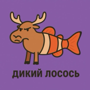

WILD SALMONRU · English ↓
На iPhone игру не обязательно искать в App Store. Wild Salmon работает как PWA: вы открываете сайт в Safari и добавляете иконку на домашний экран. Запуск почти как у обычного приложения — на весь экран, с привычной иконкой.
На домашнем экране появится иконка Wild Salmon. Запускайте её как приложение: без адресной строки браузера, в полноэкранном режиме.
В Chrome обычно появляется предложение «Установить приложение». Либо скачайте полную версию в Google Play — там же доступны обновления и рекламные механики приложения (AdMob).
Монеты, скины и локальный прогресс хранятся на устройстве. Если удалите сайт-данные Safari или сам ярлык с очисткой данных, прогресс может сброситься. Рекорды таблицы лидеров хранятся в облаке отдельно.
Политика конфиденциальности и сведения о рекламе: privacy.html.
▶ Открыть игру Частые вопросыOpen https://wildsalmon.kz/play.html in Safari (not the merch homepage) → Share → Add to Home Screen. The icon launches the game directly. Use Safari, not in-app browsers. On Android, install via Chrome prompt or Google Play. Progress is stored locally on the device.
▶ Play